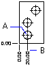

Autodesk AutoCAD 2021: ActiveX Developer's Guide > Dimensions, Leaders, and Geometric Tolerances > About Creating Dimensions (VBA/ActiveX) >
Ordinate, or datum, dimensions measure the perpendicular distance from an origin point, called the datum, to a dimensioned feature, such as a hole in a part.
These dimensions prevent escalating errors by maintaining accurate offsets of the features from the datum.

Ordinate dimensions consist of an X or Y ordinate with a leader line. X-datum ordinate dimensions measure the distance of a feature from the datum along the X axis. Y-datum ordinate dimensions measure the same distance along the Y axis. AutoCAD uses the origin of the current user coordinate system (UCS) to determine the measured coordinates. The absolute value of the coordinate is used.
The text is aligned with the ordinate leader line regardless of the text orientation defined by the current dimension style. You can accept the default text or supply your own.
To create an ordinate dimension, use the AddDimOrdinate method. This method requires three values as input: a coordinate specifying the point to be dimensioned (A), a coordinate specifying the end of the leader (B), and a Boolean flag specifying whether the dimension is an X-datum ordinate dimension or a Y-datum ordinate dimension. If you enter TRUE for the Boolean flag, the method will create an X-datum ordinate dimension. If you enter FALSE, it will create a Y-datum ordinate dimension.
This example creates an ordinate dimension in model space.
Sub Ch5_CreatingOrdinateDimension()
Dim dimObj As AcadDimOrdinate
Dim definingPoint(0 To 2) As Double
Dim leaderEndPoint(0 To 2) As Double
Dim useXAxis As Long
' Define the dimension
definingPoint(0) = 5
definingPoint(1) = 5
definingPoint(2) = 0
leaderEndPoint(0) = 10
leaderEndPoint(1) = 5
leaderEndPoint(2) = 0
useXAxis = 5
' Create an ordinate dimension in model space
Set dimObj = ThisDrawing.ModelSpace. _
AddDimOrdinate(definingPoint, _
leaderEndPoint, useXAxis)
ZoomAll
End Sub